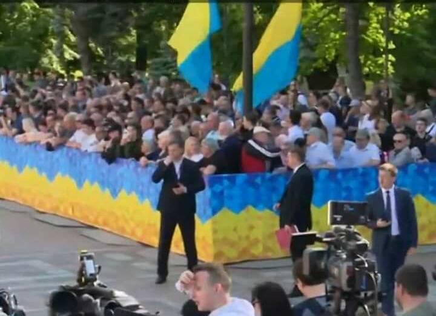
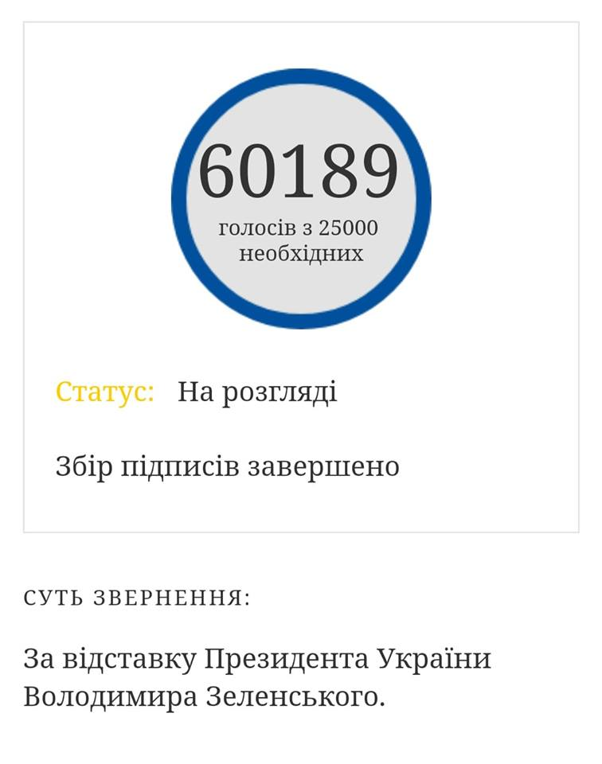

20.05.2019
Зеленський оголосив про намір достроково розпустити Верховну Раду України, незважаючи на відсутність підстав для цього »»»
UPD: Після цих слів регіонали радісно підскочили зі своїх місць і аплодували стоячи »»»
Порівняльний список делегацій, присутніх на інавгурації Петра Порошенка і Володимира Зеленського »»»
Апеляційний Суд Києва остаточно повернув проросійський серіал Свати на телеканал 1+1 #небарига
На інавгурацію прихильники Зеленського принесли ПЕРЕВЕРНУТІ прапори України

Згідно з положеннями вексилології (науки про прапори) перевернутий прапор означає поразку, а дипломатичний етикет розцінює перевернутий прапор як символ приниження
Парубій - "Було весело". Підсумки інавгурації »»»
21.05.2019
Зеленський привласнив усі права на показ своєї інавгурації »»» #небарига
Адвокат олігарха І.Коломойського Андрій Богдан в порушення Закону про люстрацію призначений Главою Адміністрації Президента »»»
UPD: Офіс президента України проігнорував запит «Громадського радіо» і не надав матеріали люстраційної перевірки щодо колишнього глави Адміністрації президента, нині керівника Офісу президента України Андрія Богдана »»»
UPD: Коломойський: Богдан – один із моїх головних юристів »»»
Новим начальником Генерального штабу (Головнокомандуючим ЗСУ) Зеленський самовільно призначив причетного до Іловайської трагедії генерала Руслана Хомчака »»»
Начальник Генштабу призначається президентом України ЗА ПОДАННЯ Міністра Оборони. Такого подання НЕ БУЛО!
Зеленський підписав указ про розпуск Верховної Ради і призначив дочасні вибори »»»
І це незважаючи на те, що правових підстав для розпуску ВР немає!
Президент України Володимир Зеленський має намір винести на всеукраїнський референдум питання про формат переговорів із Росією »»»
Посади в АП отримали "любі друзі" Зеленського »»»
Серед призначених - Сергій Шефір, один з братів Шефірів, якому сам Зеленський передав у тимчасове керування свій бізнес!
Голова СБУ та віце-прем`єр часів Януковича Хорошковський повернувся в Україну »»» #нові_обличчя
22.05.2019
Глава "95 кварталу" Іван Баканов тепер буде заступником Глави Служби безпеки України! »»»
Заступник Глави СБУ призначається президентом України але ЗА ПОДАННЯ самого Глави СБУ. Такого подання НЕ БУЛО!
Український соціолог Ірина Бекешкіна спростувала брехню Зеленського щодо 4% підтримки населенням України Верховної Ради »»»
Зеленський екстрено збирає Раду »»»
Мета засідання - внесення змін до законодавства про вибори народних депутатів
UPD1: Законопроекту про зміну виборчого законодавства нема за годину до засідання — заступник голови фракції БПП »»»
UPD2: У Раді зареєстрували проект Зеленського про зміни виборчого законодавства »»»
Незважаючи на обіцяне Зеленським з трибуни ВР запровадження відкритих списків, законопроектом передбачено ЗАКРИТІ партійні списки
UPD3: Президентський законопроект не ухвалено »»»
UPD4: Представник Зеленського у ВР Стефанчук - «Вчора під час зустрічі було досягнуто того компромісу, який сьогодні був внесений в зал. Компроміс не дотримано» »»»
UPD5: Богдан - лідери фракцій обіцяли проголосувати цей документ »»»
UPD6: Парубій: На консультаціях із Зеленським не було ніякого консенсусу стосовно закритих списків »»»
UPD7: АП оприлюднила стенограму зустрічі президента з фракціями »»»
Зі стенограми слідує, що Стефанчук і Богдан ЗБРЕХАЛИ про начебто досягнутий консенсус між членам фракцій щодо законопроекту
На сайті Президента України зареєстровано петицію про відставку Зеленського
UPD1: Петиція про відставку Зеленського за добу набрала необхідні 25 тисяч підписів »»»
А за три доби - більше 60 тисяч!
UPD2: Богдан називає петицію жартом! »»»
23.05.2019
У військових частинах проводиться опитування про можливість переговорів з ватажками "ДНР/ЛНР" »»»
Готується ґрунт для капітуляції?
Одним з членів команди Зеленського є "король контрабанди" Ігор Павлюк »»»
Відбулася телефонна розмова між Путіним, Макроном і Меркель. Лідери держав обговорили питання України БЕЗ УКРАЇНИ. В АП повідомляють, що "хочуть дізнатися про результати цих переговорів"
НАЗК знайшла у Зеленського порушення у фінансовій звітності »»»
Новообраний президент виступив на конференції iForum-2019 з промовою про інновації. Факапи Зеленського »»»
Першу публічну промову після інавгурації Зеленський виголосив російською »»»
Майдан – это "негативное явление" - Богдан »»»
Команда президента не має компетенції займатися розслідуванням справ Майдану »»»
А у попереднього Президента, значить, така компетенція була? Чому ж ви тоді звинувачували його в тому, що ніхто не покараний за розстріл Небесної Сотні?
24.05.2019
"Яндекс" купил эксклюзивные права на сериал "Слуга народа" »»»
Зеленський продовжує бізнес з країною-окупантом!
UPD: «Зелена родина ру». Кінобізнес Зеленського у Росії (розслідування) »»»
25.05.2019
Член штабу Зеленського Андрій Герус вважає за необхідне продовжувати економічні стосунки з росією »»»
А як же "бізнес на крові"?
Через акцію за імпічмент президенту у Рівному на учасників, одна з яких неповнолітня та її матір склали адмінпротоколи »»»
UPD: Зеленський у ФБ збрехав, що ніякого затримання начебто не було »»»
UPD: А результатом ініційованої Зеленським службової перевірки став вирок суду, яким учасників акції визнано винними в адміністративному правопорушенні »»»
UPD: Рівненський суд виправдав учасників акції за «імпічмент Зеленського» »»»
Петиція за відставку глави АП Богдана зібрала понад 25 тисяч підписів »»»
26.05.2019
Зеленський, незважаючи на численні проблеми в Україні та свій новий пост керівника держави виступає на "Лізі сміху" »»»
Зеленський сплагіатив своє звернення до киян з нагоди дня міста
27.05.2019
Повінь на Закарпатті. Зеленський ігнорує інформацію про критичну ситуацію »»»
28.05.2019
Зеленський побував на "лінії фронту". Один з охоронців старанно грає роль простого солдата
Петицію про відставку Зеленського заблокували за особистим розпорядженням Богдана, хоча до завершення збору підписів ще 80 днів »»»

Глава РНБО Олександр Данилюк "загубив" сервери з ситуаційної кімнати в АП. Вся команда Зеленського старанно репостить цю новину »»»
UPD: Виявляється, техніка з ситуаційної кімнати нікуди не зникала. Просто Данилюк не там її шукав »»»
Традиційно, від "нової команди" вибачень за чергову брехню - нуль!
Данилюк назвав основні завдання РНБО. Донбас і Крим в основних пріоритетах не значаться! »»»
Зеленський повернув українське громадянство Саакашвілі »»»
...попутно порушивши при цьому ст.10 ч.5 Закону України "Про громадянство України" »»»
UPD: Верховний Суд визнав законним видворення Саакашвілі з України »»»
29.05.2019
По дорозі до Львова, на зустріч з сім'ями загиблих шахтарів, Зеленський робить фоточку з шаурмою. Їм весело! »»»
Тендерний комітет Агентства з управління корупційними активами повернув Межигір'я команді Януковича!
30.05.2019
Колишній регіонал Разумков очолив новостворену партію Зеленського "Слуга народу"
Разумков: У Зеленського немає повноважень щоб виконати свої обіцянки
А у Порошенка, значить, вони були?
Зеленський нахамив журналістці "Прямого" »»»
UPD1: 3 червня "Прямий" виконав обіцянку й придбав квартиру родині загиблого шахтаря »»»
UPD2: Зеленський купив квартиру родині ТОГО САМОГО шахтаря »»»
Тепер родина, що ВТРАТИЛА ГОДУВАЛЬНИКА змушена буде оплачувати комуналку одразу в ДВОХ квартирах!
Глава МЗС ФРН Гайко Маас вимагає від Росії звільнити українських моряків. »»»
Резидент України Зеленський нічого не вимагає. Зеленський мовчить і фоткається з шаурмою.
31.05.2019
Зеленский подал заявки на регистрацию пяти новых ТМ »»»
Весна пройшла. Посаджених - НУЛЬ!